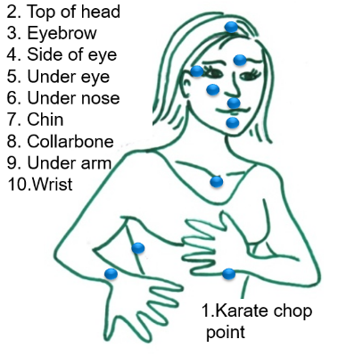

INTRODUCTION (Read or listen)
In this GO EFT Tapping© app we tap on these acupuncture points.

WHY DO TAPPING?
This GO EFT Tapping© app is for you who wants to recover quickly after today's stress, or for you who are anxious about something that has happened, is happening or will happen. You can also use EFT to change thoughts and behaviour patterns. As stress is often linked to physical ailments, either as cause or result, tapping may be helpful for physical problems too. EFT often creates permanent improvements.
EFT is a self-help method - and can also be used with a therapist. In this GO EFT Tapping© app, you just use your fingertips to stimulate some acupuncture points on your upper body, by tapping on them. You add words, mental focus and an element of acceptance.
If you tap while focusing on something that feels hard or stressful, you send calming signals to the brain's "stress centre", the amygdala. The resulting alarm response will decrease or even completely disappear.
You will be guided through the EFT process. You record your own problem and then you estimate how intense it is. Thereafter you will get a customized, guided EFT session where you follow the simple instructions in a step by step manner. Your voice and mine will be mixed.
When you leave the GO EFT Tapping© app, all recordings are deleted. They are just encrypted and stored in your phone during each GO EFT Tapping© session.
EFT TAPPING PROCESS
1. Tap on what is your “problem”
2. Tap on what's left of it
3. Tap to create an alternative response to it
(Requires the Unlimited version)
You tap with the forefinger and the middle finger, at your own pace. It does not matter on which side of the body you tap. Tap about as hard as if you were drumming on a table top with your fingertips.
WHAT TO SAY WHEN TAPPING?
The tapping is one important part of EFT, but you must also help your body and mind to know what to focus on. What is your problem? Let's call it "My problem", which can be:
· A feeling, an emotion
· A symptom
· A metaphor in your body
Feeling - That you are for example angry, frustrated, sad, worried. If you know why you feel like you are doing, it's good if you put words on it too. "I'm so frustrated that my colleague never takes me seriously." If you do not know what the feeling is, start by just saying what makes you react: "She does not listen to me, ever!".
Symptom - Pain, stiff shoulder, stomach ache, the red itching eczema on my arm etc.
Metaphor - Many times, a feeling can be felt as a body sensation, as if the feeling resides in the body somewhere. It may feel like a "Black hard knot in the stomach" or "A heavy pulsating pressure on the chest" or something completely different. I have noticed that tapping on a metaphor often create faster and lasting results. That is because the metaphor captures so much more associations than can ever be expressed in words.
Tapping is also an excellent tool to get rid of limiting beliefs that may be blocking you from well-deserved progress. That type of tapping is not covered by this basic GO EFT Tapping© app.
ABOUT THE INTENSITY
If you are already in the middle of a strong feeling when you start tapping, for example, if you feel completely panicked, sad or afraid, the words do not play such a big part. Then you can simply tap on the points you remember and often get much calmer.
When tapping on something that has happened previously, it's most important how intense you experience it NOW when you think about it. Not how it felt when it happened.
YOUR RESPONSIBILITY
I don’t see tapping as a substitute for regular medical care, rather a complement. For example: If you break a leg, first call your local emergency number, to get medical help to correct your leg and meanwhile tap on your pain and fear. If you get improvements on a disease by use of tapping, you should still discuss any changes in medical treatment with your doctor. Don’t expect the doctor to be very positive if you tell them about your sudden improvements. Many doctors as well as Wikipedia editors find it hard to believe in tapping, despite the growing evidence and empirical results. I will tell you more on this later.
Tapping can also be used as first emotional aid in trauma support. Tapping efficiently complements psychological trauma treatment. To process serious trauma, you are advised to tap wordlessly (also see www.Selfhelpfortrauma.org) or to do it together with an experienced tapping practitioner. There are many ways to tap on traumas in a gentle way so that you do not get completely overwhelmed by emotions.
The reported side effects of tapping are scarce and usually trivial. A common side effect is that you get thirsty, and temporarily tired. Just as from any acupuncture or massage session. And you can live with that, can’t you?
Try tapping on anything. It might work, and it won’t hurt!
MY OWN STORY
EFT is the acupressure-based self-help method that liberated me from my own frustration over my food intolerances, literally overnight. Remarkably enough, I got rid of the intolerance in the same instant! Furthermore, EFT helped me set my three kids free of their food intolerance and related negative emotions as well. My kids and I could not stand around 15 different foods before EFT and now we can eat anything with delight. Well, Helena still does not tolerate pumpkins, but she can live with that. No wonder then that EFT tapping quickly became my favorite method for removing emotional blocks and limitations. I try it on everything and it works most of the times.
EFT TAPPING - IN DEPTH
Even though EFT is designed to work on and for emotional limitations, it often has a positive side effect on physical problems and limitations. This is most likely because stress and mental limitations put blocks on our innate healing capacity. EFT is for example proven to considerably lower the stress hormone levels of Cortisol, during the actual tapping session with as much as 50% and on average by 24%. That is a lot! The commonly used talk therapy Cognitive Behavioural Therapy has not been able to demonstrate similar results that quick. Since stress is an underlying cause of many physical ailments, lowering the cortisol quickly may absolutely help the body recover faster.
Many times, EFT works so incredibly fast and unexpectedly that it is considered miraculous. Still, sometimes you must be persistent to get proper effect. You may have to tap on an issue several times from different perspectives until it fades away. Even if it works often, there are times or issues that do not let themselves be cleared away easily. This does not render the method useless. You may benefit from the tapping support of a seasoned EFT practitioner.
So, enjoy EFT, have fun with it. Try it on anything!
If tapping becomes overwhelming, stop it and take contact with a seasoned EFT practitioner to support you. There are many ways EFT can be made extremely gentle and still be very effective. Let EFT become a habit and you will end up with a powerful tool, always on and literally at your fingertips. A little change of direction today will bring you to a completely different place in a couple of months.
EVIDENCE AND RESEARCH
Tapping fills the criteria for an evidence-based method for several ailments, including stress, anxiety, PTSD, phobias and more, according to American Psychology Association as described on their APA PsycNet webpage in this article: “Acupoint stimulation in treating psychological disorders: Evidence of efficacy.” Recent meta-analyses showed Tapping to demonstrate large treatment effect for anxiety, depression, and PTSD for the participants. More scientific studies are underway. Several doctors promote EFT for all kinds of problems since the empirical evidence from all over the world are so convincing. Read more on ACEPs EP research page, EFTUniverse.com or AAMET.org and see for yourself. In the United States and in UK, EFT tapping is now finally approved as professional training for doctors, healthcare professionals, psychotherapists etc.
ACKNOWLEDGEMENTS
The Arabic version is made possible by Dr. Ashraf Al-Hadethe, a Graduate Member of the British Psychological Society who is currently working at the Baghdad University. His PhD Thesis was made at Clinical Psychology, Division of Psychiatry and Applied Psychology, School of Medicine at The University of Nottingham, United Kingdom. The thesis compared EFT tapping to other psychological interventions for stress and trauma. I also got support to record all Arabic audios by a person who prefers to remain anonymous.
A Swedish variant of this app is made as a prototype by Strikersoft, the EFT association and Peaceful Heart Network. Search for Stressfix on App store or Google Play store.
Now GO EFT Tapping!